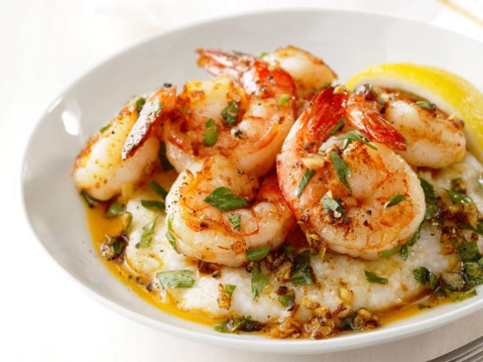

Lemon Garlic Shrimp

Description
This dish is a weeknight favorite. A delicious plate to share or enjoy for yourself
Ingredients:
- 3/4 cup instant grits
- Kosher salt and freshly ground black pepper
- 1/4 cup grated Parmesan cheese
- 3 tablespoons unsalted butter
- 1 1/4 pounds medium shrimp, peeled and deveined, tails intact
- 2 large cloves garlic, minced
- Pinch of cayenne pepper (optional)
- Juice of 1/2 lemon, plus wedges for serving
- 2 tablespoons roughly chopped fresh parsley
Directions:
- Prep all of your broccoli pesto ingredients—rinse the basil leaves, grate your Parmigiano, peel your garlic.
- Bring a big pot of salted water to a boil.
- Boil the broccoli. After two minutes, remove the florets, and add your pasta.
- While the pasta cooks, make the pesto! Blend the broccoli, basil, garlic, pine nuts, extra virgin olive oil, salt and parmigiano reggiano until it’s nice and smooth.
- When the pasta is done, scoop out a cup of that liquid gold (aka pasta water) and add it slowly to the pesto as you blend it a bit more.
- Toss the pasta with the broccoli pesto and dig in!